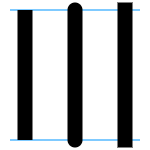

Canvas
curriculum
- About canvas
- Drawing shapes
- Applying styles
- Drawing text
- Simple animations
Элемент <canvas>
<canvas id="tutorial" width="150" height="150"></canvas>
The rendering context
const canvas = document.getElementById("tutorial");
const ctx = canvas.getContext("2d");
function draw() {
const canvas = document.getElementById("canvas");
const ctx = canvas.getContext("2d");
ctx.fillStyle = "rgb(200 0 0)";
ctx.fillRect(10, 10, 50, 50);
ctx.fillStyle = "rgb(0 0 200 / 50%)";
ctx.fillRect(30, 30, 50, 50);
}
Drawing shapes with canvas
Canvas grid (coordinate space)

Rectangles
There are three functions that draw rectangles on the canvas:
- fillRect (x, y, width, height)
- strokeRect (x, y, width, height)
- clearRect (x, y, width, height)
Rectangular shape example
function draw() {
const canvas = document.getElementById("canvas");
const ctx = canvas.getContext("2d");
ctx.fillRect(25, 25, 100, 100);
ctx.clearRect(45, 45, 60, 60);
ctx.strokeRect(50, 50, 50, 50);
}
Triangle shape example
function draw() {
const canvas = document.getElementById("canvas");
const ctx = canvas.getContext("2d");
ctx.beginPath();
ctx.moveTo(75, 50);
ctx.lineTo(100, 75);
ctx.lineTo(100, 25);
ctx.fill();
}
Lines
For drawing straight lines, use the lineTo() method.
lineTo (x, y)
function draw() {
const canvas = document.getElementById("canvas");
const ctx = canvas.getContext("2d");
// Filled triangle
ctx.beginPath();
ctx.moveTo(25, 25);
ctx.lineTo(105, 25);
ctx.lineTo(25, 105);
ctx.fill();
// Stroked triangle
ctx.beginPath();
ctx.moveTo(125, 125);
ctx.lineTo(125, 45);
ctx.lineTo(45, 125);
ctx.closePath();
ctx.stroke();
}
Arcs
To draw arcs or circles, we use the arc() or arcTo() methods.
- arc (x, y, radius, startAngle, endAngle, counterclockwise)
- arcTo (x1, y1, x2, y2, radius)
function draw() {
const canvas = document.getElementById("canvas");
const ctx = canvas.getContext("2d");
for (let i = 0; i < 4; i++) {
for (let j = 0; j < 3; j++) {
ctx.beginPath();
const x = 25 + j * 50; // x coordinate
const y = 25 + i * 50; // y coordinate
const radius = 20; // Arc radius
const startAngle = 0; // Starting point on circle
const endAngle = Math.PI + (Math.PI * j) / 2; // End point on circle
const counterclockwise = i % 2 !== 0; // clockwise or counterclockwise
ctx.arc(x, y, radius, startAngle, endAngle, counterclockwise);
i > 1 ? ctx.fill() : ctx.stroke();
}
}
}
Applying styles and colors
There are two important properties we can use:
- fillStyle = color
- strokeStyle = color
// these all set the fillStyle to 'orange'
ctx.fillStyle = "orange";
ctx.fillStyle = "#FFA500";
ctx.fillStyle = "rgb(255 165 0)";
ctx.fillStyle = "rgb(255 165 0 / 100%)";
A fillStyle example
function draw() {
const ctx = document.getElementById("canvas").getContext("2d");
for (let i = 0; i < 6; i++) {
for (let j = 0; j < 6; j++) {
ctx.fillStyle = `rgb(${Math.floor(255 - 42.5 * i)} ${Math.floor(
255 - 42.5 * j,
)} 0)`;
ctx.fillRect(j * 25, i * 25, 25, 25);
}
}
}
A strokeStyle example
function draw() {
const ctx = document.getElementById("canvas").getContext("2d");
for (let i = 0; i < 6; i++) {
for (let j = 0; j < 6; j++) {
ctx.strokeStyle = `rgb(0 ${Math.floor(255 - 42.5 * i)} ${Math.floor(
255 - 42.5 * j,
)})`;
ctx.beginPath();
ctx.arc(12.5 + j * 25, 12.5 + i * 25, 10, 0, 2 * Math.PI, true);
ctx.stroke();
}
}
}
Transparency
Because the strokeStyle and fillStyle properties accept CSS rgb color values, we can use the following notation to assign a transparent color to them.
// Assigning transparent colors to stroke and fill style
ctx.strokeStyle = "rgb(255 0 0 / 50%)";
ctx.fillStyle = "rgb(255 0 0 / 50%)";
An example using rgb() with alpha transparency
function draw() {
const ctx = document.getElementById("canvas").getContext("2d");
// Draw background
ctx.fillStyle = "rgb(255 221 0)";
ctx.fillRect(0, 0, 150, 37.5);
ctx.fillStyle = "rgb(102 204 0)";
ctx.fillRect(0, 37.5, 150, 37.5);
ctx.fillStyle = "rgb(0 153 255)";
ctx.fillRect(0, 75, 150, 37.5);
ctx.fillStyle = "rgb(255 51 0)";
ctx.fillRect(0, 112.5, 150, 37.5);
// Draw semi transparent rectangles
for (let i = 0; i < 10; i++) {
ctx.fillStyle = `rgb(255 255 255 / ${(i + 1) / 10})`;
for (let j = 0; j < 4; j++) {
ctx.fillRect(5 + i * 14, 5 + j * 37.5, 14, 27.5);
}
}
}
Line styles
There are several properties to style lines:
-
lineWidth = value
-
lineCap = type
 -
lineJoin = type
- and others
Gradients
Just like any normal drawing program, we can fill and stroke shapes using linear, radial and conic gradients.
- createLinearGradient (x1, y1, x2, y2)
- createRadialGradient (x1, y1, r1, x2, y2, r2)
- createConicGradient (angle, x, y)
Drawing text
The canvas rendering context provides two methods to render text:
- fillText (text, x, y [, maxWidth])
- strokeText (text, x, y [, maxWidth])
A fillText example
function draw() {
const ctx = document.getElementById("canvas").getContext("2d");
ctx.font = "48px serif";
ctx.fillText("Hello world", 10, 50);
}
A strokeText example
function draw() {
const ctx = document.getElementById("canvas").getContext("2d");
ctx.font = "48px serif";
ctx.strokeText("Hello world", 10, 50);
}
Styling text
There are some more properties which let you adjust the way the text gets displayed on the canvas:
- font = value
- textAlign = value
- textBaseline = value
- direction = value
Basic animations
Basic animation steps
- Clear the canvas
- Save the canvas state
- Draw animated shapes
- Restore the canvas state
Controlling an animation
We need a way to execute our drawing functions over a period of time
- setInterval()
- setTimeout()
- requestAnimationFrame(callback)
Example of animation
function init() {
window.requestAnimationFrame(drawSolar);
}
function drawSolar() {
const element = document.getElementById("canvas-solar");
const ctx = element.getContext("2d");
ctx.globalCompositeOperation = "destination-over";
ctx.clearRect(0, 0, 300, 300); // clear canvas
ctx.fillStyle = "rgba(0,0,0,0.4)";
ctx.strokeStyle = "rgba(0,153,255,0.4)";
ctx.save();
ctx.translate(150, 150);
// Earth
const time = new Date();
ctx.rotate(
((2 * Math.PI) / 60) * time.getSeconds() +
((2 * Math.PI) / 60000) * time.getMilliseconds(),
);
ctx.translate(105, 0);
ctx.fillRect(0, -12, 50, 24); // Shadow
ctx.drawImage(earth, -12, -12);
// Moon
ctx.save();
ctx.rotate(
((2 * Math.PI) / 6) * time.getSeconds() +
((2 * Math.PI) / 6000) * time.getMilliseconds(),
);
ctx.translate(0, 28.5);
ctx.drawImage(moon, -3.5, -3.5);
ctx.restore();
ctx.restore();
ctx.beginPath();
ctx.arc(150, 150, 105, 0, Math.PI * 2, false); // Earth orbit
ctx.stroke();
ctx.drawImage(sun, 0, 0, 300, 300);
window.requestAnimationFrame(drawSolar);
}
init();